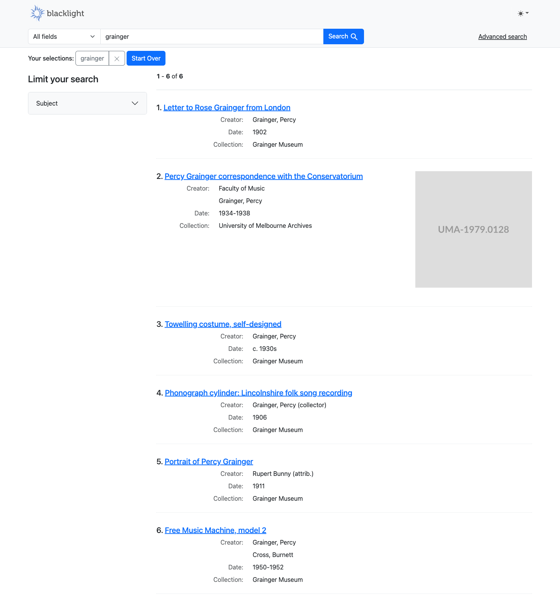
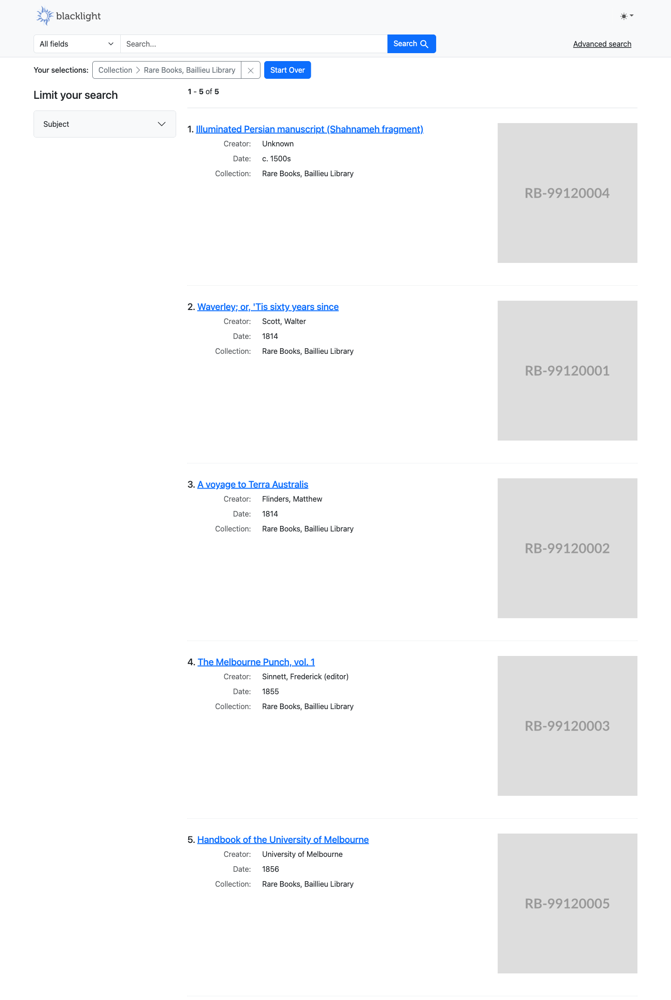
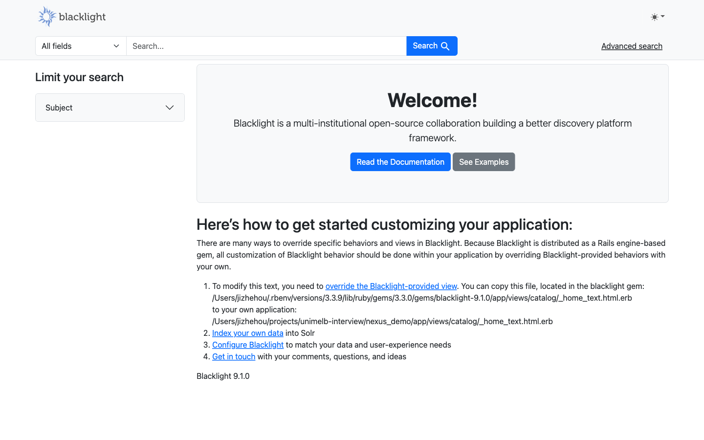
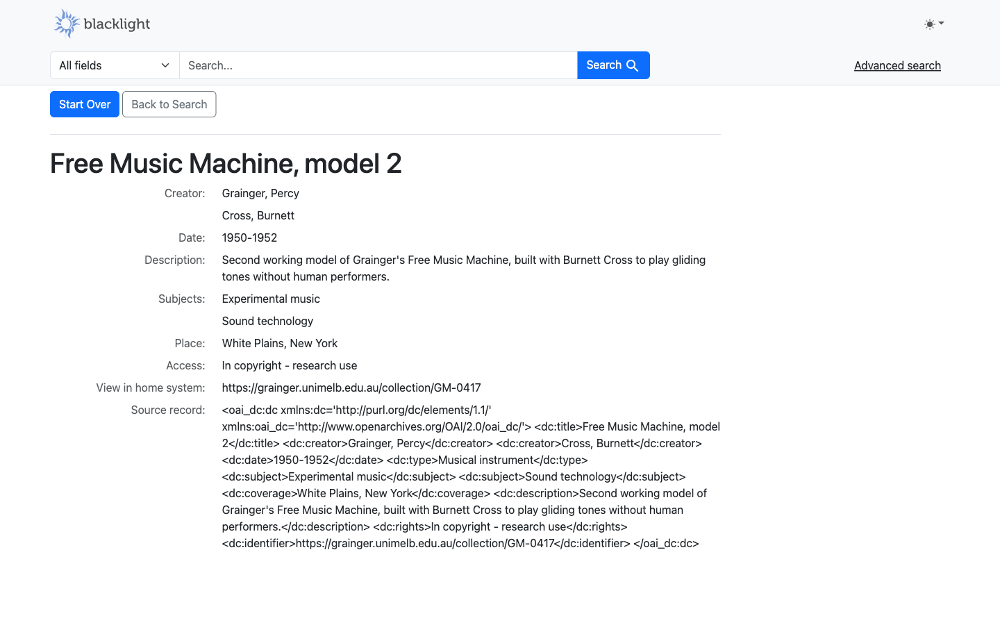
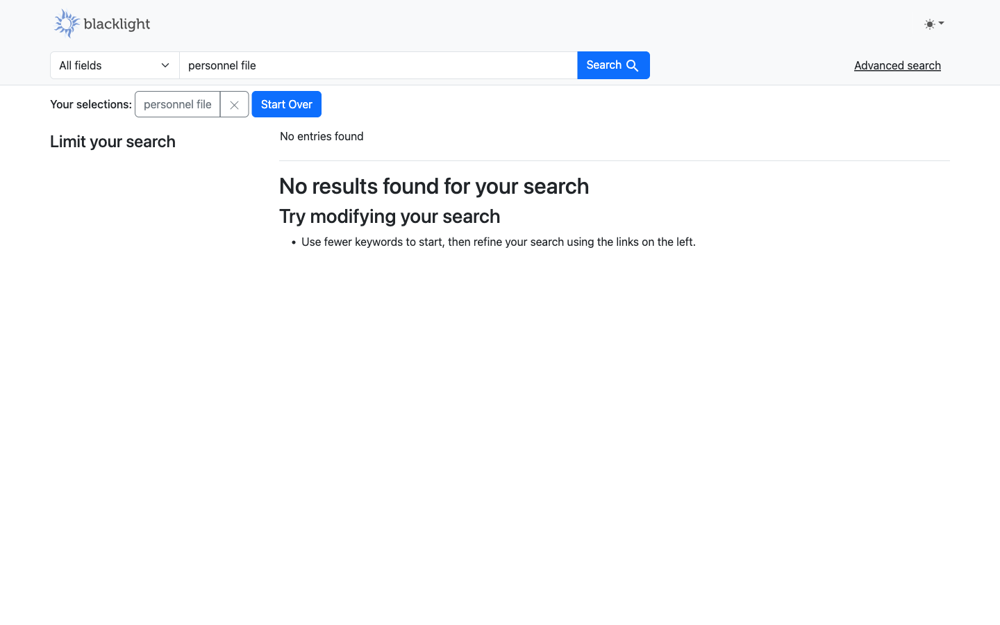
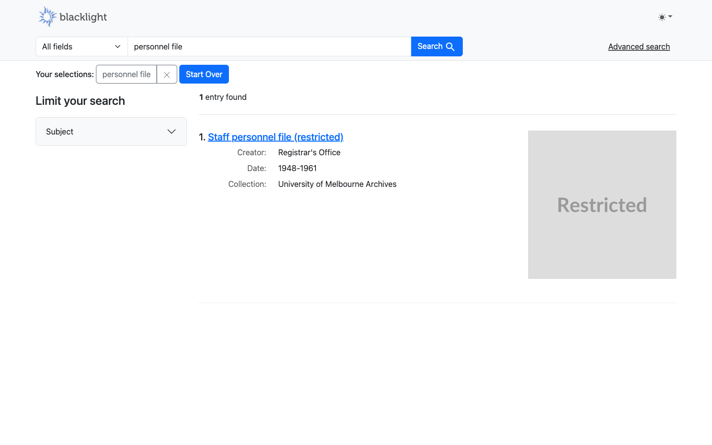
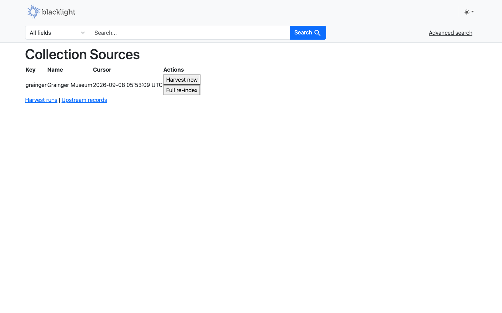
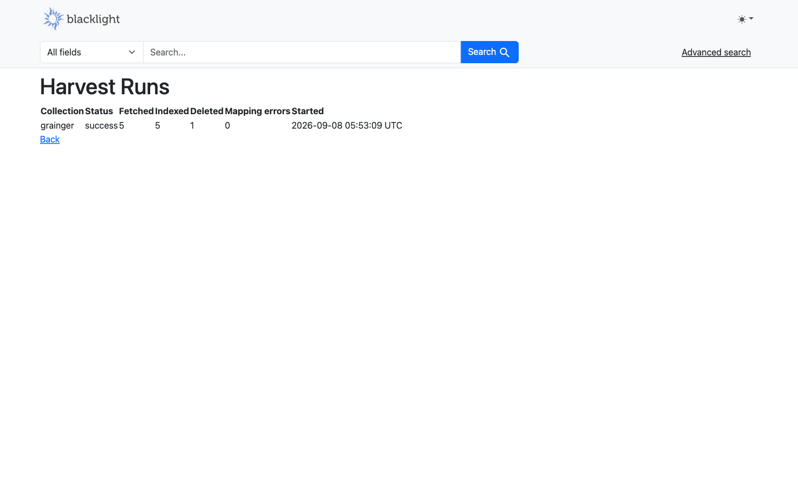
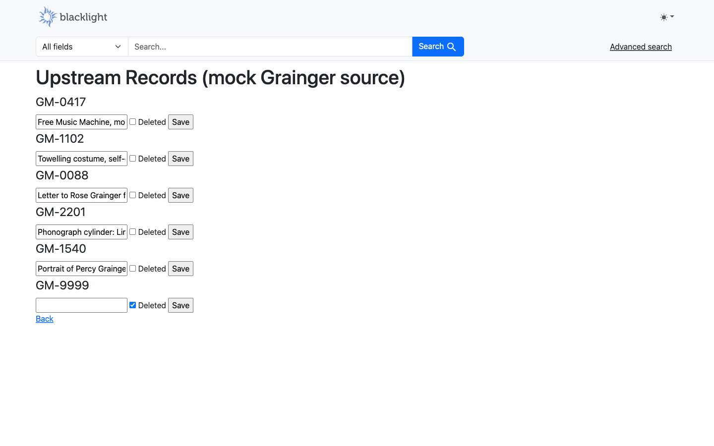

One search box over four University of Melbourne collections — Grainger Museum, Rare Books (Baillieu Library), the Herbarium, and University Archives — each in a different native metadata format, unified behind a single Blacklight + Solr schema.
A single query against the unified index. Six results span two source collections — Grainger Museum and University of Melbourne Archives — with no per-collection searching required.

1–6 of 6 results. Items 1, 3, 4, 5, 6 are Grainger Museum objects; item 2 is an Archives correspondence file — the cross-collection scenario the whole design exists to demonstrate.

The same facet set (Collection, Format, Creator, Place, Subject, Access, Date range) applies uniformly across all four source formats, because every record was mapped into the same unified schema at ingest time.
Every item page shows the normalised fields the search runs against, plus the raw source record and a link back to the (fictitious) home system — so the mapping layer is never a black box.

A single search box over all four collections, unauthenticated, no per-collection entry points.

Normalised fields (Creator, Date, Description, Subjects, Place, Access) at the
top; a “View in home system” link; and the raw
upstream oai_dc:dc record preserved verbatim under
“Source record” — nothing about the mapping is
hidden from the researcher.
A restricted personnel file is indexed but suppressed for anonymous users via a
SearchBuilder filter — not left out of the index, just filtered out of
results by default. A ?staff_view=1 toggle demonstrates the "staff view".

No results — the restricted record is filtered out by default.

?staff_view=1The restricted staff personnel file (closed until 2041) becomes visible.
A mock OAI-PMH upstream and a scheduled Rails job harvest the Grainger Museum collection incrementally — same shape as a real integration: fetch, map, index, reconcile deletes, log a structured event per run.
There is a scheduled job, but it only runs upstream → Solr. Nothing ever writes back into the mock upstream automatically:
# config/recurring.yml
harvest_grainger: # incremental, every 15 minutes
class: HarvestCollectionJob
args: ["grainger"]
schedule: every 15 minutes
harvest_grainger_full: # full re-index + orphan-delete safety net, once a day
class: HarvestCollectionJob
args: ["grainger", { full: true }]
schedule: every day at 3am
HarvestCollectionJob calls Nexus::Harvesters::OaiPmh to
fetch from the mock's OAI-PMH endpoint, maps each record through
GraingerOaiDc into the unified schema, indexes it into Solr, then runs
Nexus::Reconciler to apply deletes.
The mock upstream's own data only ever changes through the Upstream records editor below (or a direct file edit) — never through a background job. That's deliberate: the mock stands in for a real external system the University doesn't control, and the whole point of the harvester is to detect and react to changes made there, not to originate them. If a job wrote back into the upstream automatically, the incremental-sync demo would have nothing to actually demonstrate.
The live demo sequence: edit a title or tick Deleted in the upstream editor → click Harvest now on the collection sources page → the change (or removal) shows up in search on the next reload.
Not every collection-management system speaks OAI-PMH — plenty of real-world sources only offer a flat file (a CSV export dropped on a schedule, or emailed by a collection owner). The harvester layer here is deliberately built to that case as a first-class citizen, not an afterthought:
# app/services/nexus/harvesters/base.rb — the entire contract
class Base
def each(from:) # yield a Nexus::RawRecord per new/changed record
def deleted_ids(from:) # return ids no longer present upstream
end
Nexus::Harvesters::OaiPmh is one implementation of that contract, using
resumption tokens and OAI deletion headers. A CsvFileHarvester would be
a second implementation of the exact same two methods: read the file, diff each row
against what was seen last run (by a content hash or an updated_at
column if the export has one), yield the changed rows as RawRecords,
and compute deleted_ids as "ids present last run, absent this run."
Nothing else in the pipeline would know the difference. HarvestCollectionJob,
the mapper, Nexus::Indexer, Nexus::Reconciler, and the
admin UI only ever talk to the harvester through that two-method interface — adding
a CSV source is a new harvester class, a new mapper for that format's fields, and
one config row (CollectionSource#harvester = "csv_file"). No changes to
the job, the reconciliation logic, or the schema.
This build only implements the OAI-PMH path end-to-end (Grainger); Rare Books, Herbarium, and Archives are loaded once as static pre-mapped JSON rather than wired to a second live harvester, since a two-day build has to pick one integration to prove out completely rather than two half-finished ones. But the CSV-diff pattern is exactly the second shape a real integration would need — most GLAM systems split roughly evenly between "has an API" and "sends you a spreadsheet," and a harvester abstraction that can't cleanly absorb the second case isn't actually reusable.

One row per configured harvest source, with Harvest now and Full re-index buttons — the demo trigger, no shell access needed.

Fetched 5 / indexed 5 / deleted 1 (the mock's tombstoned record) / mapping errors 0 — the same counts that get emitted as a structured JSON log line per run, the event a log platform would alert on.

Edits a record's title or flips its Deleted flag directly in the mock upstream — the next harvest picks up the change and syncs it into Solr, demonstrating both update and delete propagation without touching a shell.
SearchBuilder filter chain — the same place a real system would
plug in more complex embargo logic later.